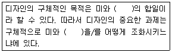
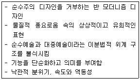
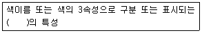
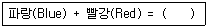
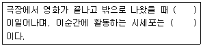
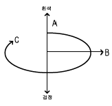

컬러리스트산업기사 (2018-03-04 기출문제)
1과목: 색채심리
1. 색채심리를 이용한 색채요법에 관한 설명 중 틀린 것은?
- Red는 우울증을 치료한다.
- Blue Green은 침착성을 갖게 한다.
- Blue는 신경 자극용 색채로 사용된다.
- Purple은 감수성을 조절하고 배고픔을 덜 느끼게 한다.
(정답률: 58%)

2. 다음 중 색채와 자연환경에 대한 설명이 틀린 것은?
- 지역색은 국가나 지방, 도시의 특성과 이미지를 부각시킨다.
- 풍토색은 일조량과 기후, 습도, 흙, 돌처럼 한 지역의 자연 환경적 요소로 형성된 색을 말한다.
- 위도에 따라 동일한 색채도 다른 분위기로 지각될 수 있다.
- 지역색은 한 지역의 인공적 요소로 형성된 색을 말한다.
(정답률: 83%)
3. 뉴턴은 색채와 소리의 조화론에서 7가지의 색을 7음계에 연계시켰따. 다음 중 색채가 지닌 공감각적인 특성이 잘못 연결된 것은?
- 노랑-음계미
- 빨강-음계도
- 파랑-음계솔
- 녹색-음계시
(정답률: 88%)
4. 다음 중 정지, 금지, 위험, 경고의 이미를 전달하는데 가장 적절한 색채는?
- 흰색
- 빨강
- 파랑
- 검정
(정답률: 92%)
5. 안전표지에 관한 설명 중 틀린 것은?
- 금지의 의미가 있는 안전표지는 대각선이 있는 원의 형태이다.
- 지시를 의미하는 안전표지의 안전색은 초록, 대비색은 하양이다.
- 경고를 의미하는 안전표지의 형태는 정삼각형이다.
- 소방기기를 의미하는 안전표지의 안전색은 빨강, 대비색은 하양이다.
(정답률: 61%)
6. 예술, 디자인계 사조별 색채특성에 관한 설명 중 틀린것은?
- 야수파는 색채의 특성을 이용하여 강렬한 색채를 주제로 사용하였다.
- 바우하우스는 공간적 질서 속에서 색 면의 위치, 배분을 중시하였다.
- 인상파는 병치혼합 기법을 이용하여 색채를 도구화 하였다.
- 미니멀리즘은 비개성적, 극단적 간결성의 색채를 사용하였다.
(정답률: 48%)
7. 색채의 상징성을 이용한 색채사용이 아닌 것은?
- 음양오행에 따른 오방색
- 올림픽 오륜마크
- 각 국의 국기
- 교통안내 표지판의 색채
(정답률: 62%)
8. 색채의 상징성을 이용한 색채사용이 아닌 것은?
- 노랑은 힌두교와 불교에서 신성시되는 색이다.
- 중국에서 노랑은 왕권을 대표하는 색이다.
- 북유럽에서 노랑은 영혼과 자연의 풍요로움을 표시한다.
- 일반적으로 국기에 사용되는 노랑은 황금, 태양, 사막을 상징한다.
(정답률: 56%)
9. 21세기 디지털 시대를 대표하는 색으로 선정된 것은?
- 노랑
- 빨강
- 파랑
- 자주
(정답률: 84%)
10. 색에서 느껴지는 시간감에 대한 설명 중 틀린 것은?
- 장파장 계통의 색채는 시간의 경과가 짧게 느껴진다.
- 단파장 계열 색의 장소에서는 시간의 경과가 실제보다 짧게 느껴진다.
- 속도감을 주는 색채는 빨강, 주황, 노랑 등 시감도가 높은 색들이다.
- 대합실이나 병원 실내는 한색계통의 색을 사용하면 효과적이다.
(정답률: 67%)
11. 1990년 프랭크 H. 만케가 정의한 색채체험에 영향을 주는 6개의 색경험의 피라미드에 해당하지 않는 것은?
- 개인적 관계
- 시대사조, 패션스타일의 영향
- 문화적 영향과 매너리즘
- 의식적 집단화
(정답률: 40%)
12. 톤에 따른 이미지의 연결이 잘못된 것은?
- Dull Tone : 여성적인 이미지
- Deep Tone : 어른스러운 이미지
- Light Tone : 어린 이미지
- Dark Tone : 남성적인 이미지
(정답률: 82%)
13. 색채정보 수집 방법 중의 하나로 약 6.10명으로 구성된 소비자와의 지속적인 인터뷰를 통해 색선호도나 문제점 등을 파악하는 것은?
- 실험연구법
- 표본조사법
- 현장 관찰법
- 포커스 그룹조사
(정답률: 66%)
14. 색채를 상징적 요소로 사용한 예로 옳은 것은?
- 사무실의 실내색채를 차분하고 집중력을 높일 수 있는 저채도의 파란색으로 계획한다.
- 기업의 아이덴티티를 강조하기 위해 하나의 색채로 이미지를 계획한다.
- 방사능의 위험표식으로 노랑과 검정을 사용한다.
- 부드러운 색채 환경을 위해 낮은 채도의 색으로 공공 시설물을 계획한다.
(정답률: 57%)
15. 자동차의 선호색에 대한 일반적 경향을 설명하는 것이 아닌 것은?
- 일본의 경우 흰색 선호경향이 압도적이다.
- 한국의 경우 대형차는 어두운 색을 선호하고, 소형차는 경쾌한 색을 선호한다.
- 자동차 선호색은 지역 환경과 생활 패턴에 따라 다르다.
- 여성은 어두운 톤의 색을 선호하는 편이다.
(정답률: 87%)
16. 색채의 공감각에 대한 설명이 옳은 것은?
- 색채의 특성이 다른 감각으로 표현되는 것
- 채도가 높은 색채의 바탕위에 있는 색이 더 밝게 보이는 것
- 한 공간에서 다른 색을 같은 이미지로 느끼는 것
- 색채 잔상과 대비 효과를 말함
(정답률: 69%)
17. 유채색 중 운동량이 활발하고 생명력이 뛰어나 역삼각형이 연상되는 색채는?
- 빨강
- 노랑
- 파랑
- 검정
(정답률: 74%)
18. 패션 디자인의 유행색에 관한 설명으로 틀린 것은?
- 국제유행색위원에서는 선정회의를 통해 3년 후의 유행색을 제시한다.
- 유행색채예측기관은 매년 색채팔레트의 30% 가량을 새롭게 제시한다.
- 계절적인 영향을 받아 봄-여름에는 밝고 연한 색, 가을겨울에는 어둡고 짙은 색이 주로 사용된다.
- 패션 디자인 분야는 타 디자인 분야에 비해 색영역이 다양하며, 유행이 빠르게 변화하는 특징이 있다.
(정답률: 72%)
19. 색채 관리(color management)의 구성 요소와 그 내용이 잘못 연결된 것은?
- 색채 계획화(planning) : 목표, 방향, 절차 설정
- 색채 조직화(organizing) : 직무 명확, 적재적소적량 배치 인간관계 배려
- 색채 조정화(coordination) : 이견과 대립 조정, 업무분담, 팀워크 유지
- 색채 통제화(controlling) : 의사소통, 경영참여, 인센티브 부여
(정답률: 72%)
20. 색채마케팅에 있어서 제품의 위치(Positioning)에 대한 설명으로 옳은 것은?
- 소비자 심리상 제품의 위치
- 제품의 가격에 대한 위치
- 제품의 성능에 대한 위치
- 제품의 디자인과 색채에 대한 위치
(정답률: 50%)
2과목: 색채디자인
21. 디자인 아이디어 발상법 중 시네틱스에 대한 설명으로 옳은 것은?
- 원인과 결과의 관계를 입출력 관계로 규명해 가면서 문제를 해결하는 아이디어 구상법
- 문제에 관련된 항목들을 나열하고 그 항목별로 어떤 특정적 변수에 대해 검토해 봄으로써 아이디어를 구상하는 방법
- 일정한 테마에 관하여 회의 형식을 채택하고, 구성원의 자유발언을 통한 아이디어의 제시를 요구하여 발상을 찾아내려는 방법
- 문제를 보는 관점을 완전히 다르게 하여 여기서 연상되는 점과 관련성을 찾아 아이디어를 발상하는 방법
(정답률: 66%)
22. 생태학적으로 건강하고 유기적으로 전체에 통합되는 인간환경의 구축을 목표로 설정하는 디자인 요건은?
- 합리성
- 질서성
- 친환경성
- 문화성
(정답률: 79%)
23. 색채계획의 기대효과로서 틀린 것은?
- 주변환경과 조화로운 도시경관 창출 및 지역주민의 심리적 쾌적성 증진
- 경관의 질적 향상 및 생활공간의 가치 상승
- 시각적으로 눈에 띄는 색상으로 이미지를 구성
- 지역 특성에 맞는 통합 계획으로 이미지 향상 추구
(정답률: 86%)
24. 디자인 사조별 색채경향의 연결이 틀린 것은?
- 데 스틸 : 무채색과 빨강, 노랑, 파랑의 3원색
- 아방가르드 : 그 시대의 유행색보다 앞선 색채사용
- 큐비증 : 난색의 강렬한 색채
- 다다이즘 : 파스텔 계통의 연한 색조
(정답률: 57%)
25. 평면 디자인을 위한 시각적 요소에 속하지 않은 것은?
- 형상
- 색채
- 중력
- 재질감
(정답률: 75%)
26. 피부색이 상아색이거나 우유빛을 띠며 볼에서 산호빛 붉은기를 느낄수 있고, 볼이쉽게 빨개지는얼굴 타입에 어울리는 머리색은?
- 밝은색의 이미지를 주는 금발, 샴페인색, 황금색 띤 갈색, 갈색 등이 잘 어울린다.
- 파랑 띤 검정(블루 블랙), 회색 띤 갈색, 청색 띤 자주의 한색계가 잘 어울린다.
- 황금블론디, 담갈색, 스트로베리, 붉은색 등 주로 따뜻한 색계열이 잘 어울린다.
- 회색 띤 블론드, 쥐색을 띠는 블론드와 갈색, 푸른색을 띠는 회색 등의 차가운 색계열이 잘 어울린다.
(정답률: 51%)
27. 색채계획에 관한 설명 중 틀린 것은?
- 디자인의 목적에 부합하는 이미지에 따라 사용색을 설정한다.
- 배색의 70% 이상 넓은 면적을 차지하는 색을 강조색이라 한다.
- 색채가 결정되는 과정에서 검토되어야 할 요소를 빠짐없이 검토할 수 있도록 체크리스트를 작성한다.
- 적용된 색을 감지하는 거리를 고려하여야 한다.
(정답률: 83%)
28. 공간별 색채계획에 대한 설명이 적합하지 않은 것은?
- 식육점은 육류를 신선하게 보이려고 붉은 색광의 조명을 사용한다.
- 사무실의 주조색은 안정감 있는 색채를 사용하고, 벽면이나 가구의 색채가 휘도 대비가 크지 않도록 한다.
- 병원 수술실의 벽면은 수술 중 잔상을 피하기 위해 BG, G계열의 색상을 적용한다.
- 공장의 기계류에는 눈의 피로를 감소시켜 주기 위해 무채색을 사용한다.
(정답률: 59%)
29. 다음중 색채를적용할 대상을검토할 때고려해야 할 조건으로 가장 거리가 먼 것은?
- 면적효과(scale) -대상이 차지하는 면적
- 거리감(distance) -대상과 보는 사람과의 거리
- 재질감(texture) -대상의 표면질
- 조명조건 -자연광, 인공조명의 구분 및 그 종류와 조도
(정답률: 45%)
30. 건축물의 색채 계획 시 유의할 조건이 아닌 것은?
- 사용 조건에의 적합성
- 광선, 온도, 기후 등의 조건 고려
- 환경색으로서 배경적인 역할 고려
- 재료의 바람직한 인위성 및 특수성 고려
(정답률: 72%)
31. 1960년대 미국에서 일어난 추상미술의 한 동향으로 색채의 시지각 원리에 근거를 두고 시각적 환영과 지각 등 심리적효과를 적극적으로 활용한 미술사조는?
- 포스트모던 (Post-Modern)
- 팝 아트(Pop Art)
- 옵 아트(Op Art)
- 구성주의(Constructivism)
(정답률: 63%)
32. 19세기 말에서 20세기 초에 일어났던 양식운동으로서 자연물의 유기적 형태를 빌려 건축의 외관이나 가구, 조명, 실내 장식, 회화, 포스터 등을 장식할 때 사용되었던 양식은?
- 아르누보
- 미술공예운동
- 데 스틸
- 모더니즘
(정답률: 68%)
33. 패션디자인 원리로 가장 거리가 먼 것은?
- 재질(texture)
- 균형(balance)
- 리듬(rhythm)
- 강조(emphasis)
(정답률: 36%)
34. 로고, 심볼, 캐릭터 뿐 아니라 명함 등의 서식류와 외부적으로 보이는 사인 시스템에서 기업의 이미지를 일관성 있게 관리하는 것은?
- P.O.P
- B.I
- Super Graphic
- C.I.P
(정답률: 62%)
35. 다음 ( )안의 내용으로 가장 알맞은 것은?

- 조형
- 기능
- 형태
- 도구
(정답률: 68%)
36. 좋은 디자인 제품으로 평가되기 위해서 충족되어야 하는 디자인의 조건에 대한 설명 중 틀린 것은?
- 합목적성: 제품 제작에 있어서 실제의 목적에 맞는 디자인을 한다.
- 심미성: 아름다움을 느끼는 미적 의식으로 주관적, 감성적인 특성을 지닌다.
- 경제성 : 한정된 경비로 최상의 디자인을 한다.
- 질서성: 디자인은 여러 조건을 하나로 통일하여 합리적인 특징을 가진다.
(정답률: 64%)
37. 다음의 내용에 해당하는 미술사조는?

- 다다이즘
- 추상표현 주의
- 팝아트
- 옵아트
(정답률: 52%)
38. 모든 사람을 위한 디자인으로서 성별, 연령, 국적, 문화적배경 등누구나 손쉽게사용할 수있는 제품 및 사용 환경을 만드는 디자인 분야는?
- 컨버전스(Convergence) 디자인
- 유니버셜(Universal) 디자인
- 멀티미디어(Multimedia) 디자인
- 인터렉션(Intraction) 디자인
(정답률: 78%)
39. 타이포그라피(typography)에 대한 설명으로 가장 거리가 먼 것은?
- 활자 또는 활판에 의한 인쇄술을 가리키는 말로 오늘날에는 주로 글자와 관련된 디자인을 말한다.
- 글자체, 글자크기, 글자간격, 인쇄면적, 여백등을 조절하여 전체적으로 읽기에 편하도록 구성하는 표현기술을 말한다.
- 미디어의 일종으로 화면과 면적의 상호 작용을 구성하는 기술적 요소의 한 가지로 사용된다.
- 포스터, 아이덴티티 디자인, 편집 디자인, 홈페이지 디자인 등 시각디자인에 활용된다.
(정답률: 71%)
40. 디자인의 조형 요소에 대한 설명으로 옳은 것은?
- 기하곡선은 분방함과 풍부한 감정을 나타낸다.
- 면은 길이와 너비, 깊이를 표현하게 된다.
- 소극적인 면(negative plane)은 점과 점으로 이어지는 선이다.
- 적극적인 면(positive plane)은 점의 확대, 선의 이동, 너비의 확대 등에 의해 성립된다.
(정답률: 48%)
3과목: 섹채관리
41. 각 색들의 분광학적인 특성들을 분석하여 입력하고 발색을 원하는 색채샘플의 분광 반사율을 입력하여, 그 색채에 대한 처방을 자동으로 산출하는 시스템은?
- 컴퓨터 자동배색(Computer Color Matching)
- 컬러 어피어런스 모델(Color Appearance Model)
- 베졸드 브뤼케 현상(Bezold-Bruke Phenomenon)
- ICM파일(Image Color Matching File)
(정답률: 78%)
42. 다음중 색온도가가장 높은것은?
- 태양(정오)
- 태양(일출, 일몰)
- 맑고 깨끗한 하늘
- 약간 구름 낀 하늘
(정답률: 55%)
43. 안료의 일반적인 특징에 대한 설명이 옳은 것은?
- 물이나 기름 또는 대부분의 유기 용제에 녹지 않는다.
- 표면에 친화성을 갖는 화학적 성질을 가지며 직물 염색용으로 주로 사용된다.
- 주로 용해된 액체상태로 사용되며 직물, 피혁 등에 착색된다.
- 염료에 비해 투명하며 은폐력이 적고 직물에는 잘 흡착된다.
(정답률: 69%)
44. 쿠벨카 문크 이론(Kubelka Munk theory)이 성립되는 색채시료를 세 가지 타입으로 분류할 때 1부류에 속하지 않는 것은?
- 열증착식의 연속 톤의 인쇄물
- 인쇄잉크
- 완전히 불투명하지 않은 페인트
- 투명한 플라스틱
(정답률: 29%)
45. 육안조색 과정에서 고려해야 할 것으로 틀린 것은?
- 형광색은 자외선이 많은 곳에서 형광 현상이 일어난다.
- 펄의 입자가 함유된 색상 조색에서는 난반사가 일어난다.
- 일반적으로 자연광이나 텅스텐 램프를 조명하여 측정한다.
- 메탈릭 색상은 입자의 크기에 따라 색상감이 다르게 나타난다.
(정답률: 37%)
46. 다음중 광택이가장 강한재질은?
- 나무판
- 실크천
- 무명천
- 알루미늄판
(정답률: 81%)
47. 디지털 컬러프린터에 나 설명으로 틀린 것은?
- CMYK를 기준으로 코딩한다.
- 하프토닝 방식으로 인쇄한다.
- 병치혼색과 감법혼색이 복합적으로 이루어진 인쇄방식이다.
- 모니터의 색역과 일치한다.
(정답률: 74%)
48. 인쇄잉크에 대한 설명이 옳은 것은?
- 래커 성분의 인쇄잉크가 일반적으로 사용된다.
- 잉크 건조시간이 오래 걸리는 히트세트잉크가 있다.
- 유성 그라비어 잉크는 환경오염을 줄이기 위해 고안되었다.
- 안료에 전색제를 섞으면 액체상태의 잉크가 된다.
(정답률: 34%)
49. 프린터 이미지의 해상도를 말하는 것으로 600dpi가 의미하는 것은?
- 인치당 600개의 점
- 인치당 600개의 픽셀
- 표현 가능한 색상의 수가 600개
- 이미지의 가로×세로 면적
(정답률: 51%)
50. 시료에 확산광을 비추고 수직방향으로 반사되는 빛을 검출하는 방식으로, 정반사 성분이 완전히 제거되는 측정방식의 기호는?
- (d:d)
- (d:0)
- 0:45a)
- (45a:0)
(정답률: 62%)
51. 스캐너와 디지털 사진기에서 디지털 이미지를 캡처하기 위해 사용하는 감광성 마이크로칩을 나타내는 용어는?
- charge coupled device
- color control density
- calibration color dye
- color control depth
(정답률: 51%)
52. 실험실에서 색채를 육안에 의해 측정하고자 할 때, 주의 할 사항으로 거리가 먼 것은?
- 기준광원의 연색성
- 작업면의 조도
- 관측자의 시각 적응상태
- 적분구의 오염도
(정답률: 59%)
53. 분광 반사율의 측정에 있어서 측정의 기준으로 사용되는 것은?
- 표준 백색판
- 회색 기준물
- 먼셀색표집
- D65 광원
(정답률: 50%)
54. 다음 '색, 색채'에 관한 설명 중 ( )안에 들어갈 용어는?

- 시지각
- 표면색
- 물체색
- 색자극
(정답률: 36%)
55. CCM 기기의 주요 기능이 아닌 것은?
- 컬러 스와치 제공
- 초기 레시피 예측 및 추천
- 레시피 수정 제안
- 예측 알고리즘의 보정 계수 계산
(정답률: 29%)
56. ISO에서 규정한 색채오차의 시각적인 영향의 요소가 아닌 것은?
- 광원에 따른 차이
- 크기에 따른 차이
- 변색에 따른 차이
- 방향에 따른 차이
(정답률: 39%)
57. ICC 프로파일을 이용해서 어떤 색공간의 색정보를 변환 할 때 사용되는 렌더링 인덴트(rendering intent)에 대한 설명중 틀린것은?
- 서로 다른 색공간 간의 컬러에 대한 번역 스타일이다.
- 렌저링 인텐트에는 4가지가 있다.
- 정확한 매칭이 필요한 단색(solid color) 변환에는 인지적 렌더링 인텐트가 사용된다.
- 절대색도계 렌더링 인텐트를 사용하면 화이트포인트 보상이 일어나지 않는다.
(정답률: 25%)
58. 다음 중 컬러 인덱스가 제공하지 못하는 정보는?
- 제조 회사에 의한 색 차이
- 염료 및 안료의 화학 구조
- 활용방법
- 견뢰도
(정답률: 41%)
59. 반사색의 색역에 가장 큰 영항을 미치는 것은?
- 색료
- 관찰자
- 혼색기술
- 고착제
(정답률: 56%)
60. 간접조명에 대한 설명으로 옳은 것은?
- 반사갓을 사용하여 광원의 빛을 모아 비추는 방식
- 반투명의 유리나 플라스틱을 사용하여 광원의 빛의 60~90%가 대상체에 직접조사되고 나머지가 천장이나 벽에서 반사되어 조사되는 방식
- 반투명의유리나 플라스틱을 사용하여 광원 빛의 10~40%가 대상체에 직접 조사되고 나머지가 천장이나 벽에서 반사되어 조사되는 방식
- 광원의 빛을 대부분 천장이나 벽에 부딪혀 확산된 반사광으로 비추는 방식
(정답률: 64%)
4과목: 색채지각의이해
61. 명도대비에 대한 설명 중 틀린 것은?
- 명도의 차이가 클수록 더욱 뚜렷하다.
- 유채색보다 무채색이 더욱 강하게 나타난다.
- 명도가 다른두 색을인접했을 때밝은 색은더욱 밝아 보인다.
- 3속성 대비 중에서 명도대비 효과가 가장 작다.
(정답률: 59%)
62. 순응이란 조명 조건이 변화함에 따라 수용기의 민감도가 변화하는 것을 말한다. 다음 중 순응에 관한 설명이 틀린 것은?
- 추상체에 의한 순응이 간상체에 의한 순응 보다 신속하게 발생한다.
- 어두운 상태에서 밝은 상태에 바뀔 때 민감도가 증가하는 것을 암순응이라 한다.
- 간상체 시각은 약 500nm, 추상체는 560nm의 빛에 가장 민감하다.
- 암순응이 되면 빨간색 꽃보다 파란색 꽃이 더 잘 보이게 된다.
(정답률: 61%)
63. 무거운 도구를 사용하는 사람들에게 심리적으로 피로감을 적게 주려면 도구를 다음의 색 중 어는 것으로 채색하는 것이 좋은가?
- 검정
- 어두운 회색
- 하늘색
- 남색
(정답률: 76%)
64. 계시대비에 대한 설명으로 틀린 것은?
- 시점을 한 곳에 집중시키려는 색채 지각 과정에서 일어난다.
- 일정한 색의 자극이 사라진 후에도 지속적으로 색의 자극을 느끼는 현상이다.
- 두 가지 이상의 색을 연속적으로 보았을 때 나타난다.
- 음성 잔상과 동일한 맥락으로 풀이될 수 있다.
(정답률: 42%)
65. 다음 혼색에관한 설명중 잘못된것은?
- 병치혼색은 서로 다른 색자극을 공간적으로 접근시켜 혼색의 효과를 얻는 방법이다.
- 영국의 물리학자이며 의사인 토마스 영(Thomas Young)은 스펙트럼의 주된 방사로 빨강, 파랑, 노랑을 제시하였다.
- 컬러 스라이드, 컬러영화필름, 색채사진 등은 감법혼색을 이용하여 색을 재현한다.
- 회전혼색을 보여주는 회전원판의 경우, 처음 실험자의 이름을 따서 맥스웰(James C. Macwell)의 회전판이라고도 한다.
(정답률: 42%)
66. 색의 동화현상에 대한 설명이 옳은 것은?
- 주위 색의 영향으로 비슷하게 보이는 현상
- 주위의 보색이 중심의 색에 겹쳐져 보이는 현상
- 보색관계에서 원래의 채도보다 채도가 강해져 보이는 현상
- 인접한 색상보다 명도가 더 높아 보이는 현상
(정답률: 74%)
67. 다음의 두 색이 가법혼색으로 혼합되어 만드어내는 ( )의 색은?

- 시안(cyan)
- 마젠타(magenta)
- 녹색(green)
- 보라(violet)
(정답률: 66%)
68. 실제보다 날씬해 보이려면 어떤 색의 옷을 입는 것이 좋은가?
- 따뜻한 색
- 밝은 색
- 어두운 무채색
- 채도가 높은 색
(정답률: 73%)
69. 다음 색 중 가장 따뜻하게 느껴지는 색은?
- 5R 4/12
- 2.5YR 5/2
- 7.5Y 8/6
- 2.5G 5/10
(정답률: 58%)
70. 색의 현상학적 분류 기법에 대한 연결이 틀린 것은?
- 표면색 -물체의 표면에서 빛이 반사되어 나타나는 물체표면의 색이다.
- 경영색 -고온으로 가열되어 발광하고 있는 물체의 색이다.
- 공간색 -유리컵 속의 물처럼 용적 지각을 수반하는 색이다.
- 면색 -물체라는 느낌이 들지 않은 채색만 보이는 상태의 색이다.
(정답률: 76%)
71. 거친 표면에 빛이 입사했을 때 여러 방향으로 빛이 분산되어 퍼져 나가는 현상은?
- 산란
- 투과
- 굴절
- 반사
(정답률: 67%)
72. 빛의 파장 범위가 620.780nm인 경우 어느 색에 해당되는가?
- 빨간색
- 노란색
- 녹색
- 보라색
(정답률: 51%)
73. 직물제조에서 시작되어 인상파 화가들이 회화기법으로 사용하면서 일반화된 혼합은?
- 가법혼합
- 감법혼합
- 회전혼합
- 병치혼합
(정답률: 73%)
74. 다음의 ( )안에 들어갈 용어가 순서대로 옳게 나열된 것은?

- 색순응, 추상체
- 분광순응, 간상체
- 명순응, 추상체
- 암순응, 간상체
(정답률: 71%)
75. 눈에서 조리개 구실을 하면서 외부에서 들어오는 빛의 양을 조절하는 부분은?
- 각막
- 수정체
- 망막
- 홍채
(정답률: 66%)
76. 다음 중 동일한 크기의 보색끼리 대비를 이루어 발생한 눈부심 효과를 줄이기 위한 방법으로 가장 거리가 먼 것은?
- 두 색 사이에 무채색을 넣는다.
- 두 색의 경계를 애매하게 만든다.
- 두 색 사이에 테두리를 두른다.
- 두색 중한 색의크기를 줄인다.
(정답률: 38%)
77. 순도(채도)가 높아짐에 따라 색상도 함께 변화하는 현상은?
- 베졸트 브뤼케 현상
- 애브니 효과
- 동화 현상
- 매카로 효과
(정답률: 60%)
78. 조명의 강조의 바뀌어도 물체의 색을 동일하게 지각하는 현상은?
- 색순응
- 색지각
- 색의 항상성
- 색각이상
(정답률: 57%)
79. 다음 중 색의 온도감에 대한 설명으로 옳은 것은?
- 인간의 경험과 심리에 의존하는 경향이 짙다.
- 색의 3속성 중에서 채도에 주로 영향을 받는다.
- 색채가 지닌 파장과는 아무 관계가 없다.
- 따뜻한 색은 차가운 색에 비하여 후퇴되어 보인다.
(정답률: 56%)
80. 빨간색을 한참응시한 후흰 벽을보았을 때청록색이 보이는 것처럼 느끼는 현상은?
- 명도 대비
- 채도 대비
- 양성 잔상
- 음성 잔상
(정답률: 71%)
5과목: 색채체계의이해
81. 색의 일정한 단계 변화를 그라데이션(gradation)이라고 한다. 그라데이션을 활용한 조화로운 배색구성이 아닌것은?
- N1 -N3-N5
- RP7/10 -P5/8 -G5/10
- Y7/10 -GY6/10 -G5/10
- YR5/5 -B5/5 -R5/5
(정답률: 42%)
82. 오방정색과 색채상징이 바르게 연결된 것은?
- 흑색 -서쪽-수(水) -현무
- 청색 -동쪽-목(木) -청룡
- 적색-북쪽 -화(火)-주작
- 백색-남쪽 -금(金)-백호
(정답률: 62%)
83. 색채연구학자와 그 이론이 틀린 것은?
- 헤링 -심리 4원색설 발표
- 문,스펜서 -색채조화론 발표
- 뉴턴 -스펙트럼 4원색설 발표
- 헬름흘츠 -3원색설 발표
(정답률: 45%)
84. NCS 색체계에 대한 설명이 틀린 것은?
- 헤링의 반대색설을 근거한다.
- 독일 색채연구소에서 개발하였다.
- 모든 색상은 각각 두 개의 속성 비율로 표현된다.
- 지각되는 색 특성화가 중요한 분야인 인테리어나 외부 환경디자인에 유용하다.
(정답률: 50%)
85. ISCC-NIST 색명법의 다음 그림에서 보여지는 A, B, C가 의미하는 것은?

- A : 명도, B : 색상, C : 채도
- A : 명도, B : 채도, C : 색상
- A : 색상, B : 톤, C : 채도
- A : 색상, B : 명도, C : 톤
(정답률: 67%)
86. 최초의 먼셀 색체계와 1943년 수정 먼셀 색체계의 가장 큰 차이점은?
- 명도에 관한 문제
- 색입체의 기준 축
- 기본 색상 이름의 수
- 빛에 관한 문제
(정답률: 35%)
87. 다음 색체계에 대한 설명이 틀린 것은?
- NCS : 모든 색은 색 지각량이 일정한 것으로 생각해서 총량을 100으로 한다.
- XYZ : Y는 초록의 자극치로 명도를 나타내고, X는 빨강의 자극값에, Z는 파랑의 자극값에 대체로 일치한다.
- L*u*v* : 컬러텔레비전과 컬러사진에서의 색과 색채현의 특성화를 위해 L*a*b*색공간보다 더 자주 사용되었다.
- DIN : 포화도의 단계는 0부터 10까지의 수로 표현되는데 0은 무채색을 말한다.
(정답률: 29%)
88. 먼셀 색표기인 5Y 8.5/14와 관계있는 관용색 이름은?
- 유유색
- 개나리색
- 크림색
- 금발색
(정답률: 63%)
89. NCS 색삼각형에서 W-C축과 평행한 직선상에 놓인 색들이 의미하는 것은?
- 동일 하양색도
- 동일검정색도
- 동일 순색도
- 동일 뉘앙스
(정답률: 45%)
90. 현색계의 설명으로 틀린 것은?
- 색표에 의해 물체색의 표준을 정한다.
- 물체들의 색들과 비교할 수 있도록 한다.
- 수치로 표기되어 변색,탈색 등의 물리적 영향이 없다.
- 표준색표에 번호나 기호를 붙여 표시한다.
(정답률: 64%)
91. 다음 중 한국산업표준(KS)에 유채색의 수식 형용사와 대응 영어가 옳은 것은?
- 초록빛(greenish)
- 빛나는(brilliant)
- 부드러운(soft)
- 탁한(dull)
(정답률: 41%)
92. 먼셀이 고안한 색체계의 가장 큰 특징은?
- 시각적 등보성에 따른 감각적인 색체계를 구성하였다.
- 가장 객관적인 체계로 모든 사람의 감성과 일치한다.
- 색의 순도에 대한 연구로 완전색을 규명하였다.
- 스펙트럼을 규명하고 이에 따른 원형배열을 하였다.
(정답률: 53%)
93. 유사색상 배색의 특징은?
- 자극적인 효과를 준다.
- 대비가 강하다.
- 명쾌하고 동적이다.
- 무난하고 부드럽다.
(정답률: 79%)
94. 오스트발트의 색채조화론과 관련이 없는 것은?
- 등간격의 무채색 조화
- 등백계열의 조화
- 등가색환의 조화
- 음영계열의 조화
(정답률: 56%)
95. 미국 색채학자인 저드(D.B. Judd)의 색채 조화론 원칙이 아닌 것은?
- 질서의 원칙
- 친근성의 원칙
- 이질성의 원칙
- 명료성의 원칙
(정답률: 72%)
96. Yxy 색체계의 색을 표시하는 색도도에 대한 설명으로 틀린 것은?
- Red 부분의 색공간의 가장 크고 동일 색채 영역이 넓다.
- 백색광은 색도도의 중앙에 위치한다.
- 색도도 안의 한 점은 혼합색을 나타낸다.
- 말발굽형의 바깥 둘레에 나타난 모든 색은 고유 스펙트럼을 가지고 있다.
(정답률: 39%)
97. 다음 중 시인성이 가장 높은 조합은?
- 바탕색 : N5, 그림색 : 5R 5/10
- 바탕색 : N2, 그림색 : 5Y 8/10
- 바탕색 : N2, 그림색 : 5R 5/10
- 바탕색 : N5, 그림색 : 5Y 8/10
(정답률: 53%)
98. PCCS 색체계에 대한 설명으로 틀린 것은?
- 빨강, 노랑, 녹색, 파랑의 4색상을 색영역의 중심으로 한다.
- 톤(tone)의 색공간을 설정하고 있는 것이 특징이다.
- 선명한 톤은 v로 칙칙한 톤은 sf로 표기한다.
- 모든 색상의 최고 채도를 모드 9s로 표시한다.
(정답률: 52%)
99. 오스트발트 색체계의 설명으로 옳은 것은?
- 오스트발트는 스웨덴의 화학자로서 색채학 강의를 하였으며, 표색체계의 개발로 1909년 노벨상을 수상하였다.
- 물체 투과색의 표본을 체계화한 현색계의 컬러 시스템으로 1917년에 창안하여 발표한 20세기 전반에 대표적 시스템이다.
- 이 색체계는 회전 혼색기의 색채 분할면적의 비율을 변화시켜 색을 만들고 색표로 나타낸 것이다.
- 이상적인 백색(W)과 이상적인 흑색(B), 특정 파장의 빛만을 완전히 반사하는 이상적인 중간색을 회색(C) 이라 가정하고 투과색을 체계화하였다.
(정답률: 29%)
100. 오스트발트 색체계의 색표기방법인 12pg에 대한 의미가 옳게나열된 것은? (단,12 -p -g의 순으로나열)
- 색상, 흑색량, 백색량
- 순색량, 흑색량, 백색량
- 색상, 백색량, 흑색량
- 순색량, 명도, 채도
(정답률: 38%)